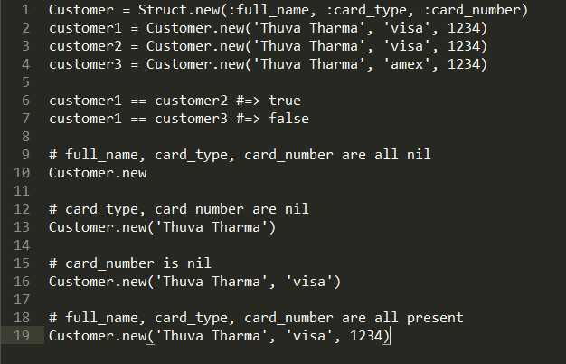

Ways to Create Classes in Ruby
Created By Sagar Rathi
Date: 11/09/2014
Classes are first-class objects in Ruby. All classes happen to be instances of Class. In other words, classes are Class objects just like 'hello' and 'world' are String objects. There are 3 ways to create classes in Ruby.
Use the class Keyword
You would use the class keyword to create a class. This is usually called a class definition:
f you're a Rubyist, you've seen and done this so many times. So, let's move on.
Use Class.new
Just like how we created a customer with Customer.new in the example above, we can create a class with Class.new:
This is functionally equivalent to regular class definition, but more explicit. By convention, classes are referenced by constants in Ruby. This is why we're assigning the object returned by Class.new to Customer constant, but we can assign it to a regular variable as well. On the other hand, if you don't use a constant in a regular class definition, you will get an error:
Use Struct
Struct is available as part of Ruby's standard library, and you don't need to require anything to use it. Struct lets you create classes for data container objects without any boilerplate:
This has all the features of Customer class we created with regular class definition as well as using Class.new above. In addition, the customer objects will have equality as per value object semantics.
Conclusion
In Ruby, you can create classes using the class keyword (class definition), Class.new, and Struct. Although you would use regular class definition in the vast majority of cases, Class.new and Struct would sometimes come in handy if you know how to use them.